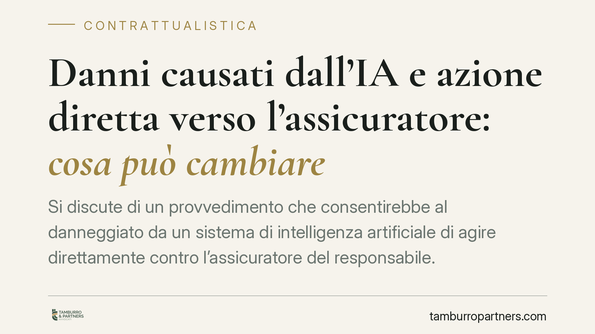

Danni causati dall'IA e azione diretta verso l'assicuratore: cosa può cambiare
Si discute di un provvedimento che consentirebbe al danneggiato da un sistema di intelligenza artificiale di agire direttamente contro l'assicuratore del responsabile. Una tutela simile a quella della R.C. auto, ma con limiti rilevanti: nessun obbligo di polizza, nessun fondo di garanzia, eccezioni contrattuali opponibili. Prima di trarne conseguenze occorre attendere il testo definitivo.

Il contesto e una premessa di metodo
Secondo lo schema di decreto in discussione, il danneggiato da un sistema di intelligenza artificiale potrebbe chiedere il risarcimento direttamente alla compagnia che assicura il soggetto responsabile, senza dover prima citare in giudizio quest'ultimo.
Una precisazione è doverosa. Alla data di redazione di questo contributo, numero, anno, articolato e data di entrata in vigore del provvedimento non risultano confermati in Gazzetta Ufficiale. Trattiamo quindi il tema in chiave prospettica: l'analisi vale salvo verifica del testo definitivo su fonte ufficiale (Normattiva o Gazzetta Ufficiale). Chi debba assumere decisioni concrete consulti il testo pubblicato.
Inquadramento normativo
La cornice europea è già consolidata. Il Regolamento (UE) 2024/1689, noto come AI Act, disciplina lo sviluppo e l'uso dei sistemi di intelligenza artificiale secondo una logica di rischio, con obblighi crescenti per i sistemi ad alto rischio. L'AI Act non regola però, in via diretta, il risarcimento del danno civile.
Su questo versante il quadro europeo è ancora in movimento: la proposta di direttiva sulla responsabilità da intelligenza artificiale ha avuto un percorso incerto, mentre la nuova disciplina sulla responsabilità da prodotto difettoso (Direttiva (UE) 2024/2853) estende le proprie regole anche al software e ai sistemi di IA.
In questo contesto si colloca l'ipotesi di una norma nazionale sull'azione diretta del danneggiato verso l'assicuratore. Il meccanismo è noto nella responsabilità civile automobilistica (artt. 144 ss. del Codice delle assicurazioni private, D.lgs. 209/2005): il danneggiato agisce contro la compagnia senza passare dal danneggiante.
Cosa cambierebbe in concreto
L'azione diretta rafforza la posizione di chi subisce il danno, perché offre un interlocutore solvibile e procedure più rapide. Ma, nella versione in discussione, convivono tre limiti che ne ridimensionano la portata.
Nessun obbligo di polizza. L'azione diretta ha senso solo se esiste una copertura assicurativa. Senza obbligo, l'impresa che utilizza IA potrebbe non essere assicurata: in tal caso il danneggiato resterebbe privo di questa via.
Nessun fondo di garanzia. Nella R.C. auto, quando manca copertura o il responsabile è ignoto, interviene il Fondo di garanzia per le vittime della strada. Qui un presidio analogo non sarebbe previsto: il rischio di incapienza ricade sul danneggiato.
Eccezioni contrattuali opponibili. L'assicuratore potrebbe opporre al danneggiato le eccezioni derivanti dal contratto con l'assicurato: franchigie, massimali, esclusioni, decadenze. La tutela diventa quindi dipendente dal contenuto della singola polizza.
Onere della prova e opacità algoritmica
Il nodo più delicato resta probatorio. Dimostrare il nesso tra il funzionamento di un sistema di IA e il danno è difficile quando il sistema è opaco: la logica decisionale non è sempre ricostruibile, neppure da chi lo utilizza.
Il diritto reagisce a questa opacità con strumenti come gli obblighi di accesso e divulgazione della documentazione tecnica e, in alcune ipotesi, presunzioni che agevolano il danneggiato. Sono profili ancora in assestamento e la loro effettiva portata dipenderà dal testo definitivo e dal coordinamento con la disciplina europea.
Per le imprese ciò significa che la tracciabilità delle decisioni algoritmiche e la conservazione dei log tecnici diventano elementi difensivi, non meri adempimenti di compliance.
Cosa fare in concreto
- Imprese che usano IA: mappate i sistemi utilizzati e il loro livello di rischio ai sensi dell'AI Act, verificando se esista copertura assicurativa adeguata e cosa effettivamente copra.
- Imprese che usano IA: organizzate la tracciabilità delle decisioni algoritmiche e la conservazione della documentazione tecnica, in funzione di un futuro contenzioso.
- Imprese assicuratrici: valutate l'impatto dell'azione diretta sulla formulazione di clausole, massimali ed esclusioni, perché incideranno sulla posizione di soggetti terzi.
- Danneggiati: prima di agire, verificate l'esistenza e il contenuto della polizza del responsabile, da cui dipendono le eccezioni opponibili.
- Tutti: attendete la pubblicazione ufficiale del testo prima di adottare decisioni basate su date e numeri di articolo non ancora confermati.
Diventa centrale l'analisi preventiva del rischio contrattuale: con l'azione diretta molte questioni si spostano sul terreno della redazione e dell'interpretazione delle polizze, più che sull'accertamento della responsabilità in sé.
---
Contributo informativo a cura di Tamburro & Partners Avvocati - Avv. Giuseppe Tamburro. Non costituisce parere legale.
Ogni contratto ha il suo equilibrio.
Se vuoi una revisione delle clausole o una redazione su misura, scrivi allo studio. Ti rispondiamo entro un giorno lavorativo.